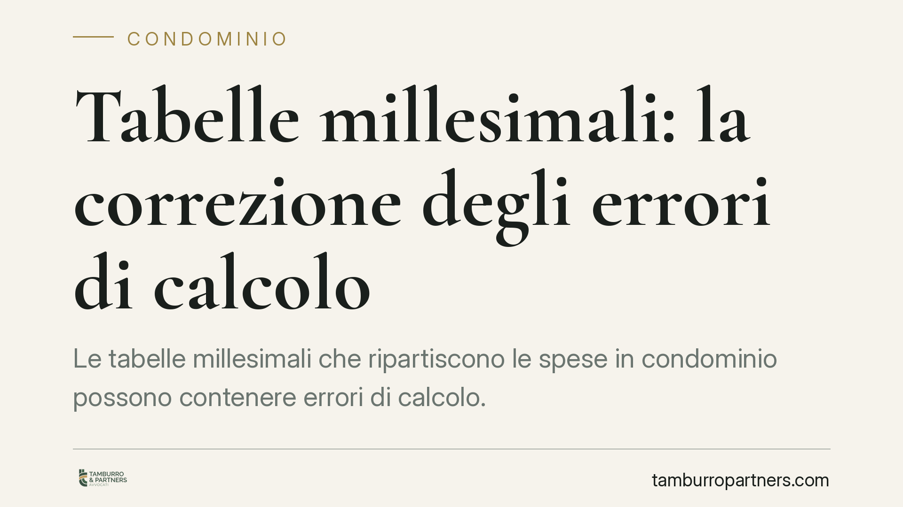

Tabelle millesimali: la correzione degli errori di calcolo
Le tabelle millesimali che ripartiscono le spese in condominio possono contenere errori di calcolo. La Cassazione, in linea con l'orientamento consolidato, ricorda che la loro approvazione ha natura di mero accertamento: ciò incide direttamente sulla possibilità di correggerle e sui quorum necessari. Un tema che tocca ogni condòmino quando scopre di pagare più o meno del dovuto.

La natura delle tabelle millesimali
Le tabelle millesimali sono il documento che esprime, in millesimi, il valore proporzionale di ciascuna unità immobiliare rispetto all'intero edificio. Su questa base si ripartiscono le spese (art. 1123 c.c.) e si calcolano i quorum assembleari.
Il punto decisivo è la loro natura giuridica. Secondo un orientamento consolidato della Cassazione, l'approvazione delle tabelle redatte secondo i criteri legali ha natura di mero accertamento: l'assemblea non "crea" diritti, ma si limita a fotografare rapporti di valore già esistenti. Da qui la conseguenza pratica più rilevante: se la tabella contiene un errore di calcolo, quell'errore non diventa intangibile per il solo fatto di essere stato approvato.
> Nota. La sentenza n. 4827/2026 citata dalle fonti divulgative va verificata su banca dati ufficiale prima di essere assunta come precedente puntuale. Il principio di diritto qui esposto corrisponde comunque all'indirizzo già affermato dalla giurisprudenza di legittimità.
Il quadro normativo: art. 69 disp. att. c.c.
L'art. 69 delle disposizioni di attuazione del codice civile, come riformato dalla L. 220/2012, disciplina rettifica e modifica delle tabelle. Occorre fare chiarezza su un equivoco diffuso.
Dopo la riforma, la rettifica o la modifica delle tabelle non richiede più l'unanimità, ma la maggioranza prevista dall'art. 1136, comma 2, c.c. (maggioranza degli intervenuti che rappresenti almeno la metà del valore dell'edificio). Ciò vale sia quando emerge un errore, sia quando sono mutate le condizioni di una parte dell'edificio in misura tale da alterare per più di un quinto il valore proporzionale di un'unità.
L'unanimità resta necessaria soltanto per le tabelle di natura convenzionale o contrattuale: quelle con cui i condòmini, derogando ai criteri legali di cui agli artt. 1118 e 1123 c.c., adottano un diverso regime negoziale di ripartizione. In quel caso non si corregge un calcolo, si modifica un accordo: e un accordo si tocca solo con il consenso di tutti.
Errore di calcolo o convenzione: la distinzione che conta
La differenza è sostanziale.
- Errore di calcolo (o errata applicazione dei criteri legali): la tabella si corregge a maggioranza qualificata, perché si tratta di riallineare la rappresentazione al valore reale.
- Convenzione negoziale di ripartizione: esprime una scelta volontaria dei condòmini. Per modificarla serve l'unanimità, trattandosi di diritti disponibili delle parti.
Utile anche distinguere i due strumenti di tutela:
- l'azione di rettifica ha natura dichiarativa, mira ad accertare il valore corretto e, secondo la giurisprudenza prevalente, non è soggetta a termini di decadenza;
- l'impugnazione della delibera che approva o modifica le tabelle segue invece i termini decadenziali dell'art. 1137 c.c. (trenta giorni dalla deliberazione per i presenti dissenzienti o astenuti, dalla comunicazione per gli assenti).
Confondere i due piani è un errore frequente: far decorrere il termine breve su ciò che invece può essere accertato senza limiti temporali, o viceversa.
Implicazioni pratiche per il condòmino
Chi ritiene di pagare oneri sproporzionati rispetto al valore effettivo della propria unità non è necessariamente vincolato per sempre alla tabella in vigore. Se l'anomalia dipende da un errore di calcolo o da errata applicazione dei criteri legali, la via è la rettifica, deliberabile a maggioranza qualificata o, in mancanza, perseguibile in sede giudiziale.
Se invece la ripartizione nasce da un accordo unanime, lo scenario cambia: nessuna maggioranza può imporne la modifica senza il consenso di tutti i proprietari.
Cosa fare in concreto
- Recuperate il titolo delle tabelle: verificate se derivano dal regolamento contrattuale, da delibera assembleare o da allegato all'atto di acquisto.
- Qualificate l'anomalia: distinguete l'errore di calcolo dalla scelta convenzionale, perché cambia il quorum applicabile.
- Controllate i termini: se è in gioco una delibera, considerate il termine di trenta giorni ex art. 1137 c.c.; l'azione di rettifica segue regole diverse.
- Richiedete l'iscrizione del punto all'ordine del giorno per sottoporre la rettifica all'assemblea prima di valutare il contenzioso.
- Conservate la documentazione tecnica (planimetrie, superfici, destinazioni d'uso) utile a dimostrare l'errore.
La corretta qualificazione iniziale è l'elemento che orienta tutto il percorso successivo.
---
Contributo informativo a cura di Tamburro & Partners - Avv. Giuseppe Tamburro. Non costituisce parere legale.
Ogni condominio ha una storia a sé.
Se gestisci un'amministrazione e vuoi un confronto su una specifica questione condominiale, scrivi allo studio. Ti rispondiamo entro un giorno lavorativo.